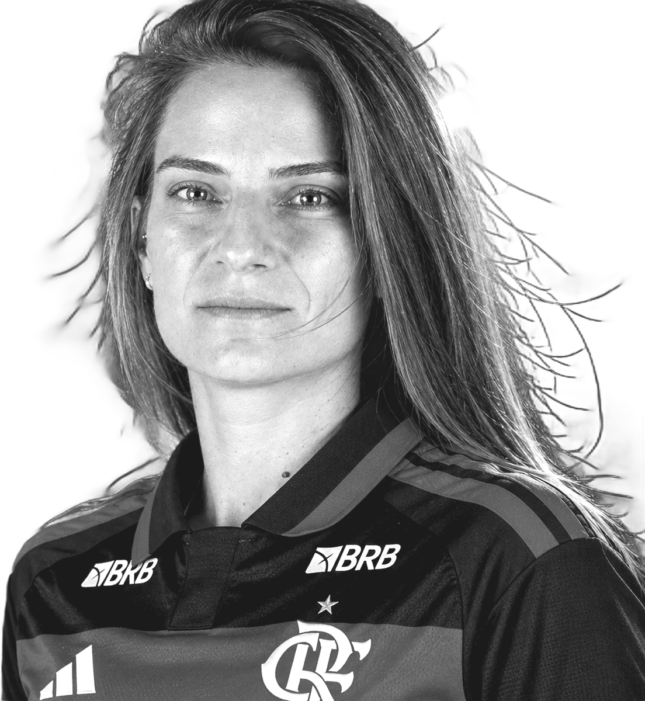
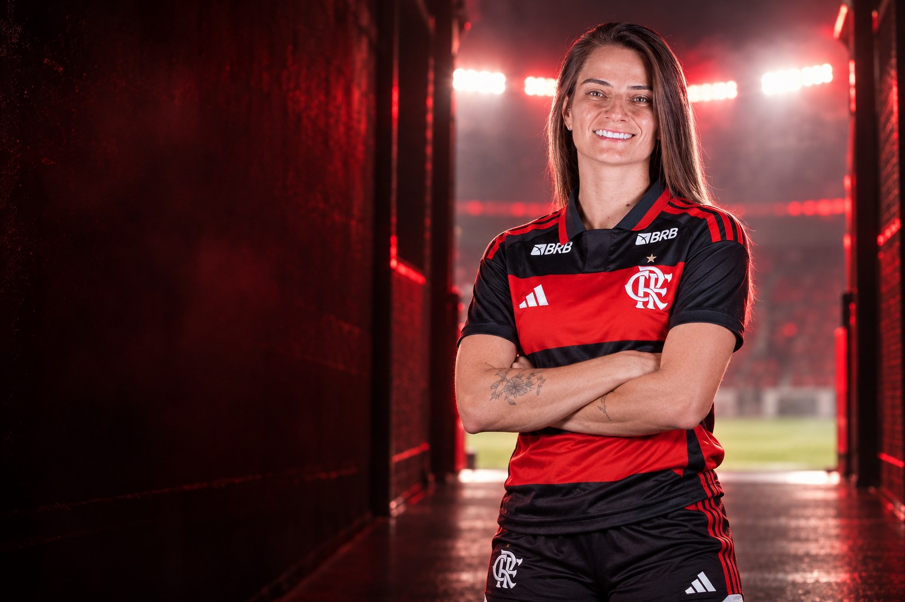
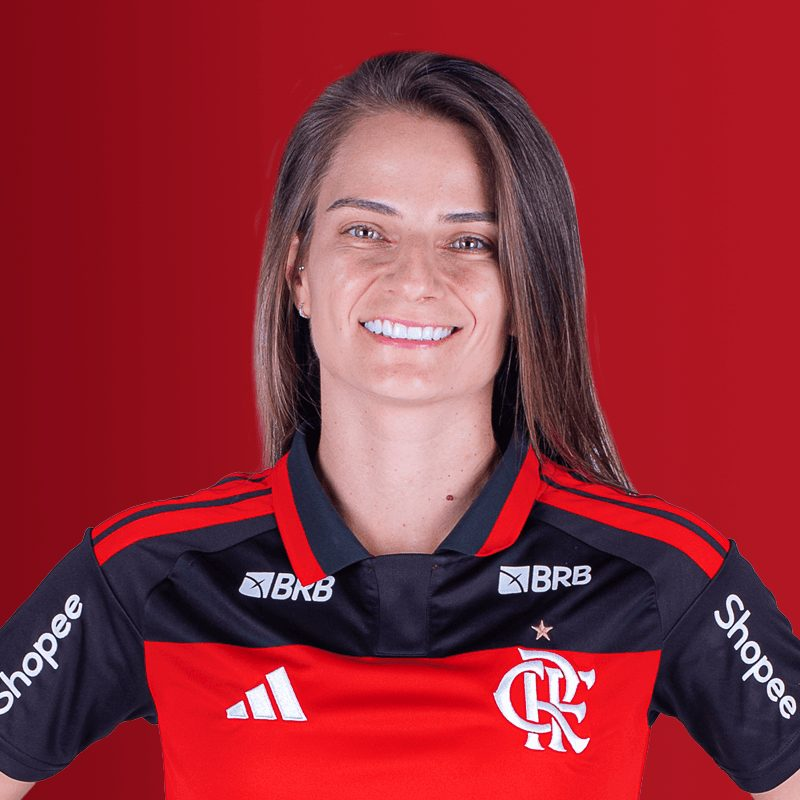
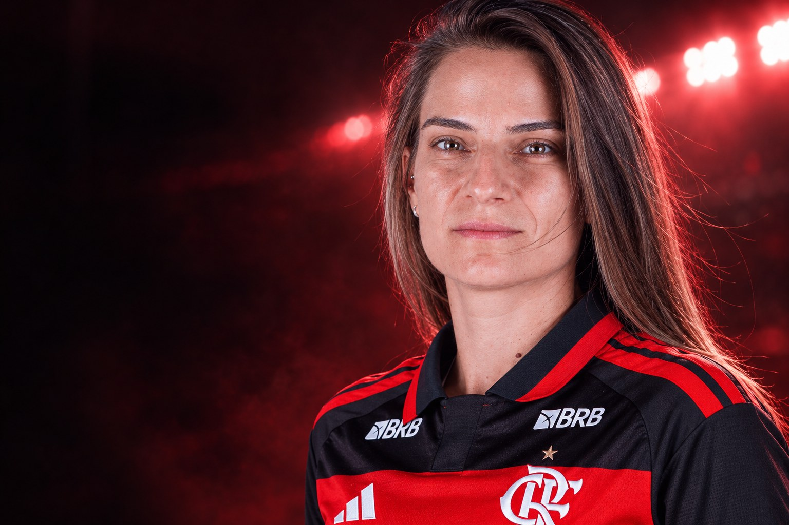
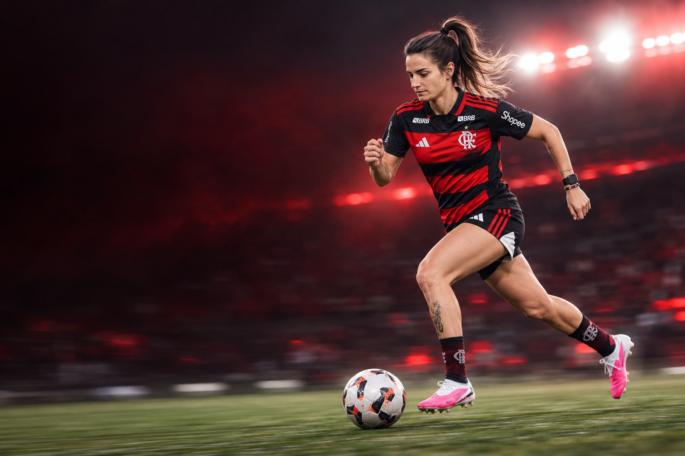
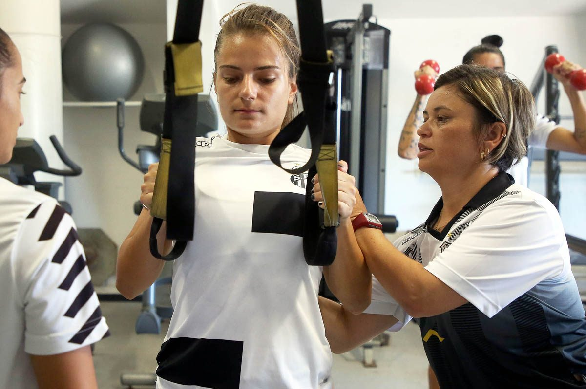

Flamengo
Clube atual
24 jogos · 3 gols

Futebolista profissional · Lateral-esquerda
Chaiane Locatelli


Sobre
Chaiane Locatelli é futebolista profissional e atua como lateral esquerdo e meia esquerda. Clube atual: Flamengo. Seleção: Brasil.

“Estou muito feliz com a oportunidade de vestir a camisa do Flamengo, um time gigantesco e que sempre é protagonista em tudo.”Chai Locatelli, ao site do Flamengo, no anúncio da contratação, em janeiro de 2025
Perfil

Carreira em números
Números
Carreira
Clubes em destaque
24 jogos · 3 gols


7 jogos · 2 gols
Conquistas
Galeria
Currículo esportivo
| Temporada | Clube | País | Jogos | Gols | Assistências |
|---|---|---|---|---|---|
| 2026 | Flamengo | – | – | – | |
| 2025 | Flamengo | 24 | 3 | 2 | |
| 2024 | Botafogo | 28 | 1 | 1 | |
| 2023 | Botafogo | 27 | 3 | 0 | |
| 2022 | Botafogo | 12 | 3 | 0 | |
| 2021 | Botafogo | 22 | 1 | 2 | |
| 2020 | Botafogo | 11 | 0 | 0 | |
| 2019 | São Paulo | 14 | 2 | 0 | |
| 2018 | 1 | 0 | 0 | ||
| 2017 | 3 | 0 | 0 | ||
| 2016 | 3 | 2 | 0 | ||
| 2015 | – | – | – | ||
| 2015 | – | – | – | ||
| 2014 | 5 | 0 | 0 | ||
| 2013 | 11 | 3 | 0 | ||
| 2012 | Kindermann | 2 | 0 | 0 | |
| 2011 | Kindermann | 1 | 0 | 0 |
Jogos, gols e assistências conforme a base estatística Ogol. O clube atual segue o anúncio oficial do clube.
Na mídia
Contato profissional
Assuntos profissionais, comerciais e de carreira: fale pelo perfil oficial da atleta.
Mídia kit
International profile